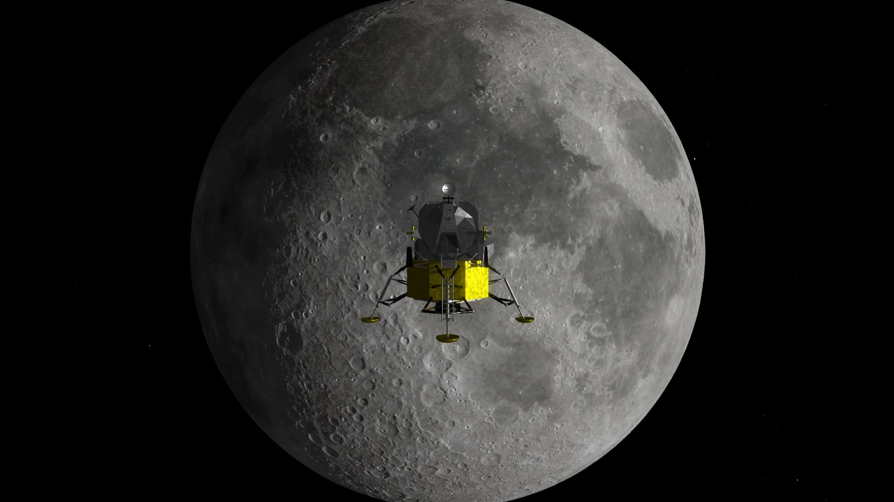
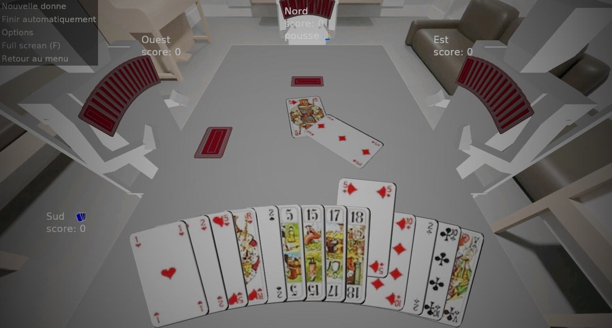

Moonlanding project

Un jeu d'adresse dans lequel vous pilotez un module lunaire. Rejoignez la zone d'atterrissage et posez-vous en douceur… avant de tomber en panne sèche !
 Français
Français
 English
English
Je partage ici les jeux que je développe en C++ sur mon temps libre.
Essayez les démos et suivez leur évolution.

Un jeu d'adresse dans lequel vous pilotez un module lunaire. Rejoignez la zone d'atterrissage et posez-vous en douceur… avant de tomber en panne sèche !

Un jeu de tir… mais en pleine mer ! Livrez des combats navals à bord de cuirassés du début de la Seconde Guerre mondiale.

Enfin un jeu de cartes qui en jette ! Appel, contre-appel, l'angoisse du Petit au bout… Que du plaisir, sans publicité ni jeu en ligne. Idéal pour s'entraîner.